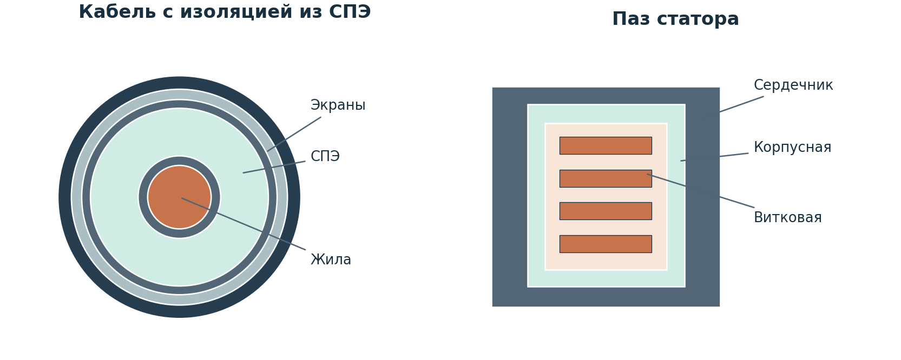
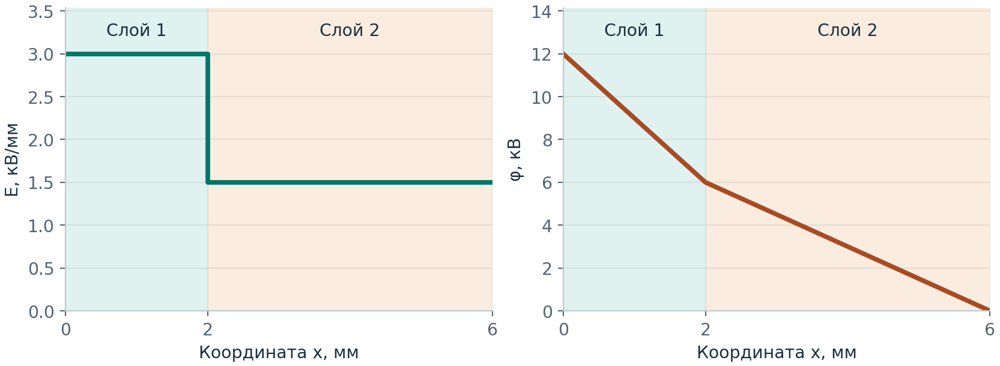
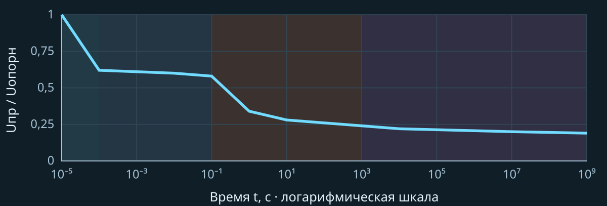
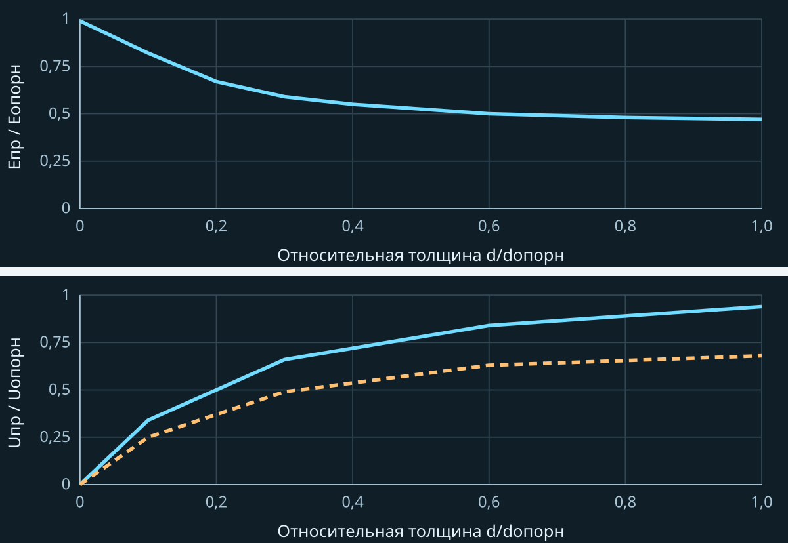
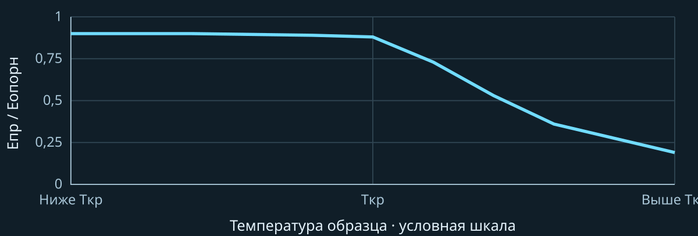
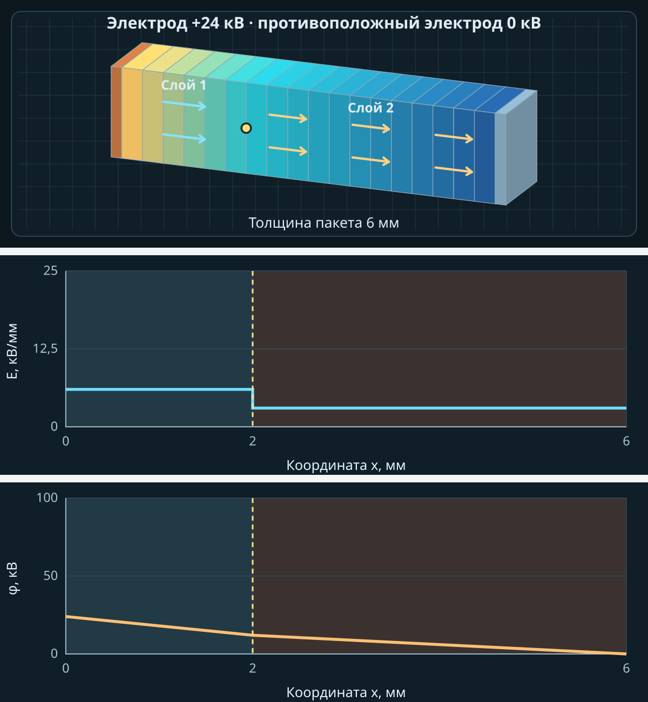
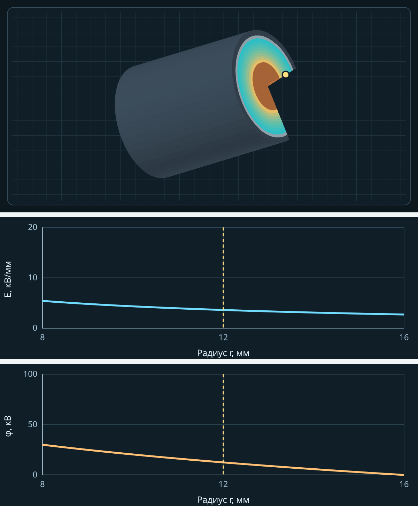
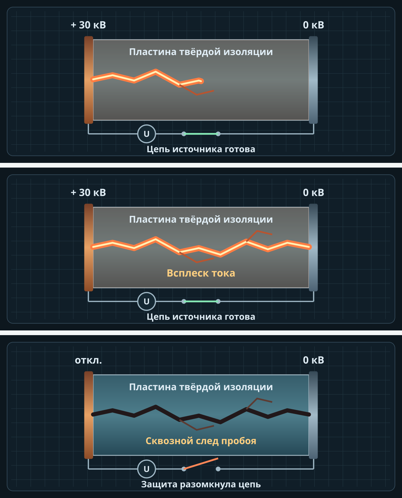
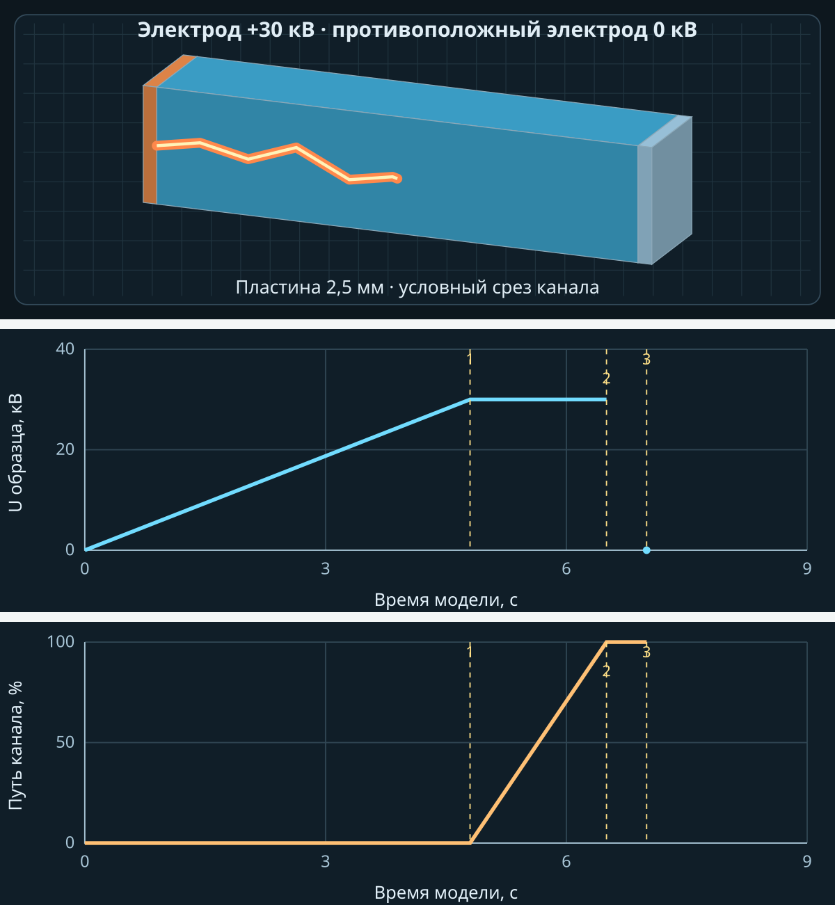

Тема 7 · лекция для студента
Вы научитесь различать изоляцию кабеля, обмотки и ввода, объяснять влияние толщины, температуры и времени и строить E(x) и φ(x). В конце проверьте выводы в тренажёре и подготовьтесь к практическому занятию.
Где работает твёрдая изоляция

Рисунок 1. Условные разрезы кабеля и паза статора. Схемы выполнены без масштаба.
В кабеле слой СПЭ разделяет полупроводящие экраны. В пазу корпусная изоляция отделяет обмотку от заземлённого сердечника. Витковая изоляция разделяет соседние витки. Во вводе изоляция отделяет токоведущий стержень от фланца. В трансформаторе твёрдые барьеры применяют между слоями и обмотками.
С чего начать разбор конструкции
Отметьте на схеме проводники с разными потенциалами, диэлектрик и границы материалов. Затем укажите, какой режим напряжения действует на каждую часть изоляции.
Вопрос для самопроверки. Какой слой двигателя отделяет витки друг от друга, а какой — всю катушку от сердечника? Обведите эти места на рисунке.
Свойства материалов и обозначения
| Показатель | Что означает |
|---|---|
| εᵣ | Относительная диэлектрическая проницаемость. Безразмерна. Показывает, во сколько раз ε материала больше ε₀. |
| tg δ | Тангенс угла диэлектрических потерь. Безразмерен. Для синусоидального режима характеризует отношение активной и реактивной составляющих тока через образец. |
| ρᵥ | Удельное объёмное сопротивление, Ом·м. Характеризует сопротивление протеканию тока через объём материала. |
| Eпр | Электрическая прочность, кВ/мм. Отношение Uпр к толщине образца в оговорённых условиях испытания. |
| Tраб | Рабочая температура, °C. Допустимое значение относится к материалу или изделию в заданных условиях. |
Сравнение образцов
| Материал | εᵣ | tg δ | Eпр, кВ/мм | ρᵥ, Ом·м | Tраб, °C |
|---|---|---|---|---|---|
| ПЭНП | 2,2–2,3 | 0,0002 | 45–55 | 10¹³ | 90 |
| ПВХ, винипласт | 3,2 | 0,02 | 35–45 | 10¹¹ | 90 |
| ПТФЭ | 1,9–2,2 | 0,002 | 25–27 | 10¹³–10¹⁶ | до 260 |
| ПЭТФ | 3,1–3,2 | 0,003 | 180 | 10¹³ | 120 |
| Эпоксид КЭ-3 | 4,4 | 0,008 | 37 | 3,5·10¹¹ | — |
Источник данных — табл. П1.3 [1]. Переход из кВ/см в кВ/мм требует деления на 10, из Ом·см в Ом·м — умножения на 0,01. Знак «—» означает, что в исходной строке нет значения Tраб.
При выборе сравнивайте марку, геометрию и состояние образца, температуру, частоту, влажность и метод испытаний. Значение Eпр в таблице помогает сравнивать образцы. Допустимую нагрузку готовой конструкции обосновывают отдельно.
Нагревостойкость системы
Примеры классов по ГОСТ 8865-93 [3] — A (105 °C), E (120 °C), B (130 °C), F (155 °C), H (180 °C). IEC 60085 [5] разделяет оценку материала и системы. Сочетание ленты, смолы, технологии пропитки и конструкции обмотки оценивают совместно.
Поле в плоских слоях
Пусть x отсчитывается от электрода +U к заземлённому электроду. Слои плоские, поле направлено по нормали, диэлектрики линейны. Свободного заряда на границе нет. Проводимость и краевые эффекты в модели опущены.
D = ε₀εᵣᵢEᵢ · U = ΣEᵢdᵢ · S = Σ(dᵢ/εᵣᵢ)
Eᵢ = U/(εᵣᵢ S) · ΔUᵢ = Eᵢdᵢ · dφ/dx = −E
D — нормальное электрическое смещение, Кл/м². ε₀ — электрическая постоянная, Ф/м. εᵣᵢ — относительная проницаемость слоя. При dᵢ в мм и U в кВ получаем S в мм, Eᵢ в кВ/мм и ΔUᵢ в кВ. Для вычисления D в СИ переведите E в В/м: 1 кВ/мм = 10⁶ В/м. Для одного слоя формула даёт E = U/d.
Решённый пример
U = 12 кВ, d₁ = 2 мм, εᵣ₁ = 2, d₂ = 4 мм, εᵣ₂ = 4. Тогда S = 2/2 + 4/4 = 2 мм. Получаем E₁ = 3,00 кВ/мм и E₂ = 1,50 кВ/мм. На каждый слой приходится 6 кВ. Потенциал в начале, на границе и в конце равен 12, 6 и 0 кВ.

Рисунок 2. Расчётные E(x) и φ(x) при U = 12 кВ. Заливка отмечает границы слоёв.
При удвоении U поля и падения напряжения удвоятся. Доли напряжения сохранятся, пока dᵢ и εᵣᵢ постоянны. В длительном режиме постоянного напряжения распределение может измениться из-за проводимости и накопления заряда.
Пробой и длительность воздействия
В учебнике [1] различаются электрический пробой, тепловой пробой и пробой при длительном воздействии. При электрическом пробое высокое поле запускает развитие канала до существенного разогрева. При тепловом пробое тепловыделение превышает теплоотвод. При длительном воздействии накапливаются необратимые повреждения.

Рисунок 3. График из вкладки «Пробой» по рис. 1.34 [1]. Uопорн — условное опорное значение. Границы областей иллюстративны.
| Область | Как объяснить участок |
|---|---|
| I | Очень короткое воздействие. Для развития канала нужно время, поэтому Uпр повышается. |
| II | Электрическая область. Существенный нагрев ещё не успевает развиться. |
| III | Тепловой вклад. По мере роста длительности Uпр заметно падает. |
| IV | Длительная деградация. Uпр меняется медленно. |
Напряжение и электрическая прочность
Eпр = Uпр/d · Û = √2·Uдейств для синусоиды
Первое выражение описывает электрическую прочность по пробою плоского образца. Второе переводит действующее значение синусоиды в амплитуду. Для повторяющихся импульсов амплитуду определяют по форме напряжения.
Влияние условий на прочность

Рисунок 4. Кадры из вкладки «Пробой» по рис. 1.35–1.36 [1]. Сверху — эффект толщины, снизу — полярности. Сплошная линия — отрицательное острие, штриховая — положительное.
У тонкой непропитанной бумаги Eпр растёт при уменьшении толщины, как в примере эффекта Иоффе. Напряжение Uпр зависит также от d. В импульсном опыте острие–плоскость для оргстекла и NaCl отрицательное острие давало более высокое Uпр. Результат зависит от материала, геометрии и формы напряжения.

Рисунок 5. Кадр из вкладки «Пробой» по рис. 1.37 [1]. Tкр относится к условиям конкретного опыта.
При низкой температуре Eпр может меняться слабо. Выше условной границы Tкр роль потерь и нагрева возрастает. Условия охлаждения, частота и форма напряжения влияют на положение перехода.
Дефекты и контроль изоляции
Воздушная прослойка
Полимер 3 мм с εᵣ = 4 и плоская прослойка воздуха 0,20 мм с εᵣ = 1 находятся под U = 8 кВ. S = 0,95 мм. Eпол = 2,11 кВ/мм, Eвозд = 8,42 кВ/мм, ΔUвозд ≈ 1,68 кВ. Для вывода о зажигании ЧР нужны размеры, форма и давление в газовом включении, а также режим напряжения.
Влага и края электродов
Увлажнение и рост tg δ требуют сопоставить температуру, напряжение и частоту измерений, проверить муфты, оболочку и историю эксплуатации. В реальных кабелях со СПЭ сочетание влаги и поля может приводить к водным триингам [9]. У кромки электрода поле неоднородно, поэтому используют локальную модель геометрии.
Что именно проверяют
| Объект и вопрос | Документ |
|---|---|
| Пробой образца при 50 Гц или постоянном напряжении | ГОСТ 6433.3-71 [2]. IEC 60243-1 [6] — кратковременная прочность при промышленной частоте. |
| Оценка класса нагревостойкости | ГОСТ 8865-93 [3], IEC 60085 [5]. |
| Приёмка двигателя переменного тока | ПУЭ, п. 1.8.15 [4]. Табл. 1.8.9 — включение без сушки. Табл. 1.8.10 — сопротивление изоляции. Табл. 1.8.11 — испытательное напряжение промышленной частоты. |
| Повторяющиеся импульсы питания от ПЧ | Данные производителя машины. IEC 60034-18-42 [7] — квалификация стойких к ЧР систем типа II. |
Коэффициент абсорбции Kабс = R₆₀/R₁₅. Для 153 и 90 МОм Kабс = 1,70. Для оценки сверяйте вид изоляции, температуру, время и применимую строку нормы. Формула Eпр = Uпр/d сама по себе не определяет приёмо-сдаточный режим.
Самопроверка и подготовка к практике
Проверьте себя в тренажёре
1. В режиме «Два слоя» установите исходные параметры. Запишите E₁, E₂, ΔU₁ и ΔU₂. Повторите при 24 кВ и сравните доли напряжения.
2. В режиме «Полимер и воздушная прослойка» сравните поля в полимере и воздухе. Вычислите напряжение на прослойке по её толщине.
3. Откройте «Пробой» и объясните, почему в области I на схеме нужен более высокий Uпр, чем в области II.
4. Решите три расчётных задания и пройдите один вариант теста. После сдачи разберите ошибки по пояснениям.
Подготовьте данные для занятия
Уточните, чем отличаются номинальное линейное напряжение, измеренный пик фаза–корпус и напряжение испытания 50 Гц. В практической работе используйте тот тип напряжения, который прямо задан для каждого расчёта.
Измерение поля по слоям

Кадр из «Поле по слоям». Выбрана карта потенциала. Щуп на границе при x = 2 мм. U = 24 кВ, d₁ = 2 мм, d₂ = 4 мм, εᵣ₁ = 2, εᵣ₂ = 4.
Стрелки направлены от положительного электрода к заземлённому. Их яркость условно передаёт величину напряжённости E. Цвет карты показывает выбранную величину по легенде. Значения потенциала φ в кВ читают на отдельном графике. Поворот меняет ракурс. Щуп отмечает тот же x на блоке и на двух графиках. Граница слоёв расположена при x = 2 мм. Здесь E меняется от 6 до 3 кВ/мм, а φ остаётся непрерывным и равно 12 кВ.
Поле в изоляции кабеля

Карта E и два радиальных профиля из «Кабель 3D». Жила +30 кВ, экран заземлён. a = 8 мм, b = 16 мм, радиальный щуп r = 12 мм.
E(r) = U/[r·ln(b/a)] · φ(r) = U·ln(b/r)/ln(b/a)
a — радиус жилы, b — внутренний радиус экрана, r — расстояние от оси. Все радиусы берём в мм, U в кВ. В длинном однородном коаксиальном кабеле E убывает как 1/r. Экран задаёт нулевой потенциал. Среднее вдоль радиальной толщины Eср = U/(b−a), поскольку интеграл E от a до b равен U. Жёлтая метка на обоих графиках показывает один радиус. Вырез на рисунке открывает слои для осмотра, но расчёт относится к целому кабелю.
В примере при r = 12 мм E ≈ 3,61 кВ/мм и φ ≈ 12,45 кВ. Максимум в СПЭ у жилы ≈ 5,41 кВ/мм, минимум у экрана ≈ 2,71 кВ/мм, среднее по радиальной толщине 3,75 кВ/мм.
Развитие канала пробоя

Три кадра из вкладки «Пробой» при пороге 30 кВ. Сверху вниз: растёт канал, канал достиг второго электрода, защита разомкнула цепь.
Для повтора выберите пластину без дефекта толщиной 2,5 мм. Поднимите U до 30 кВ и поставьте анимацию на паузу, чтобы рассмотреть канал. В этой модели 30 кВ = 12 кВ/мм × 2,5 мм. Это условие демонстрации. Время анимации и порог не описывают реальное испытание.
При отключении источник перестаёт поддерживать напряжение на образце. На схеме остаётся след проводящего канала. Ток до отключения зависит от источника, сопротивления канала и параметров защиты.
Запись хода пробоя

Кадры из «Пробой». Сверху показан рост канала при 30 кВ. Ниже приведена запись того же опыта после отключения.
При автоматическом подъёме напряжения для пластины 2,5 мм без дефекта метка 1 показывает начало роста канала при 30 кВ (4,8 с модели), метка 2 — замыкание (6,5 с), метка 3 — отключение (7,0 с). Между 2 и 3 напряжение не рассчитывается. Оранжевая кривая показывает долю пройденного пути канала. Времена относятся к учебной анимации.
Источники
Номера в квадратных скобках соответствуют перечню ниже. Справочные графики перерисованы в условном масштабе. Расчётные кривые построены по модели плоских слоёв.
1. Важов В. Ф., Лавринович В. А. Техника высоких напряжений. ТПУ, 2014. § 1.2.2.1, с. 57–60, рис. 1.34–1.37, табл. П1.3
2. ГОСТ 6433.3-71 · электрическая прочность твёрдых материалов при 50 Гц и постоянном напряжении
3. ГОСТ 8865-93 · нагревостойкость материалов и систем изоляции
4. ПУЭ, 7-е изд., гл. 1.8, п. 1.8.15 · приёмо-сдаточные испытания двигателей переменного тока
5. IEC 60085:2007 · оценка нагревостойкости
6. IEC 60243-1:2013 · кратковременная электрическая прочность при промышленной частоте
7. IEC 60034-18-42:2017+A1:2020 · квалификация систем типа II для питания от преобразователя
8. Siemens. Requirements placed on third-party motors, 09/2020, § 7.3, рис. 7-3
9. Aqueous degradation in harvested medium voltage cable insulation · полевые образцы кабелей
10. J. Stiles. Электростатическое поле коаксиальной линии, University of Kansas
11. Hoevenaars и соавт. SPE-204493-MS. Скважинный насос, § VIII.A, рис. 14, 15 и 23